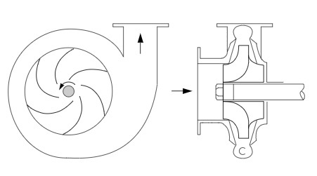
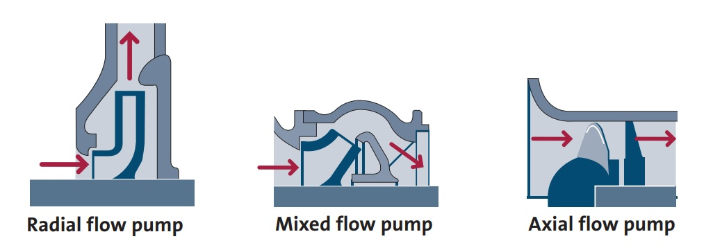

Kinetic pumps are dynamic devices that impart the energy of motion (kinetic energy) to a liquid by use of a rotating impeller, propeller, or similar device.
All centrifugal pumps use the same pumping principle in that the impeller rotates the liquid at high velocity, thereby building up a velocity head.
At the periphery of the pump impeller, the liquid is directed into a volute. The volute commonly has an increasing cross-sectional area along its length so that as the liquid travels along the chamber, its velocity is reduced.
Since the energy level of the liquid cannot be dissipated at this point, the conservation of energy law (Bernoulli’s theorem) requires that when the liquid loses velocity energy as it moves along the chamber, it must increase the energy related to pressure. Hence, the pressure of the liquid increases. Common applications include:
A pump in which the head is developed principally by the action of centrifugal force. The liquid enters the impeller at the hub and flows radially to the periphery.
A pump in which the head is developed partly by centrifugal force and partly by the lift of the vanes on the liquid. This type of pump has a single inlet impeller with the flow entering axially and discharging in an axial/radial direction.
This pump, sometimes called a propeller pump, develops most of its head by the propelling or lifting action of the vanes on the liquid. It has a single inlet impeller with the flow entering axially and discharging nearly axially.

Selecting an appropriate pump type is the first step, after which, the pump must be appropriately sized for the particular application. This requires significant understanding of the wider pumping system, particularly to establish the required pump duty.
Notable inputs:
Several industry tools exist to aid in pump sizing using the above inputs. One such useful tool by Xylect is linked here. Additionally, the following spreadsheet may be particularly helpful in establishing the aforementioned inputs. (This file can also be found in the supporting documents folder.)